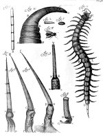

Antoni van Leeuwenhoek, Vervolg der Brieven, geschreven aan de wytvermaarde Koninglijke Societeit in Londen. Leyden, by Cornelis Boutesteyn, boekverkoper op ‘t Rapenburg, 1704. -- (2361 I 8:2)
Antoni van Leeuwenhoek werd in 1632 als zoon van een mandenmaker in Delft geboren. Hij werd in Amsterdam opgeleid voor de lakenhandel en dreef van 1654 tot 1660 een zaak in deze wollen stoffen in zijn geboortestad. Daarna werd hij kamerbewaarder (een functie die misschien ligt tussen die van conciërge en deurwaarder) op het stadhuis. In 1669 behaalde hij het examen van wijnroeier (ijker van wijn- en andere vaten). Beide functies vervulde tot zijn dood in 1723.
Wanneer men deze korte weergave van Van Leeuwenhoeks leven leest, komt dit niet opwindend over en staat men verbaasd, wanneer men verneemt dat hij contacten heeft gehad met de groten der aarde van zijn tijd, die hem zelfs in Delft kwamen bezoeken. Zijn belang moet dus duidelijk elders liggen. Dat is zijn werk in zijn vrije tijd: de vervolmaking van de microscopie en de waarnemingen, die hij daarmee deed. Zijn microscopen (na zijn dood bleek, dat hij er driehonderdnegenenvijftig bezat) waren merendeels van het type dat bestaat uit een messing of zilveren plaatje, waarin een lensje geklemd kon worden. Het (droge) preparaat werd op een houdertje geprikt, dat door middel van een schroef het preparaat in focus voor het lensje bracht. Met dit, in onze ogen primitieve apparaat, met een lensje dat maximaal zo’n tweehonderdvijftig keer vergrootte, ontdekte Van Leeuwenhoek de infusiediertjes, bacteriën, spermatozoën en rode bloedlichaampjes. Door zijn talloze onderzoekingen was Van Leeuwenhoek tot twee grondgedachten gekomen: de structuur van organische en de anorganische natuur berust op dezelfde grondslagen, en in elk organisme is er een onlosmakelijke samenhang tussen vorm en functie.
Al zijn ontdekkingen en waarnemingen meldde hij per brief vanaf 1673, toen de beroemde Delftse medicus Reinier de Graaf hem bij de Royal Society in Londen (zie nummer 88) had geïntroduceerd, aan dat genootschap. Deze brieven verschenen in de Philosophical transactions en werden later gebundeld. Hiervan verschenen ook Latijnse en Nederlandse vertalingen.
Een goed voorbeeld van een dergelijk verslag vinden we geïllustreerd op de bijgaande afbeelding: hoe een worm of made, via het ‘tonneken’ (dat wij cocon noemen) een vlieg wordt (figuur 2 tot en met 4), de angel van een brandnetel (figuur 5 tot en met 9) en de schaar of ‘nyper’ van een ‘Oost-Indische Duisent-Been’, de laatste zeven figuren bekeken door ‘glase sleuteltiens’, zoals Constantijn Huygens’ in een gedicht onder een portret van Van Leeuwenhoek de microscopen noemt.
Literatuur
- A. Schierbeek, Antoni van Leeuwenhoek, zijn leven en werken. Lochem 1950-1951. 2 dln.
- Claus Nissen, Die zoologische Buchillustration. Ihre Geschichte und Bibliographie. Stuttgart 1969-1978. 2 dln, nr. 2415.
- Antoni van Leeuwenhoek, 1632-1723. Red. S.B. Engelsman. Leiden 1982 ( = Mededeling van het Museum Boerhaave. Nr. 214).
| vorige pagina | top pagina |